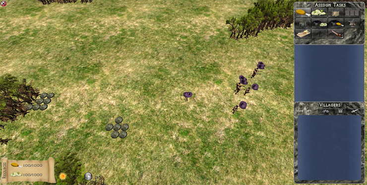

Dusk
A Real-Time Simulation Game Prototype
This is a prototype game created with a team of two others using the Unity engine.
The player's goal is to survive by directing a group of villagers to collect resources, build buildings, and defend against an onslaught of enemies.
The game will have a day and night cycle; during the day there are no monsters, so the villagers are safe to go out and do their work. Each night, progressively stronger monsters siege the village/fortress, attempting to destroy structures and eat all the villagers.

[ Dusk v.1.0 ] [ Tutorial (PDF) ]